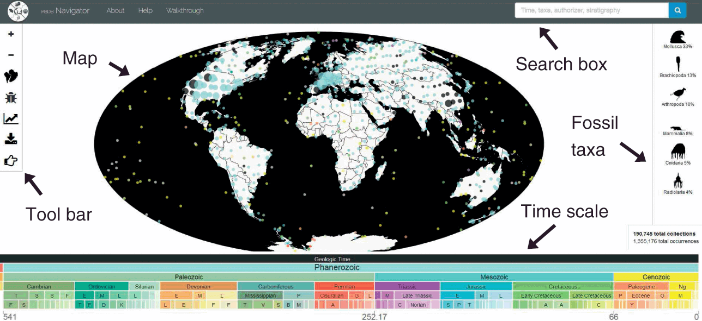

Sobre el Proyecto
La paleontología es una disciplina científica que estudia la historia de la vida en la Tierra a
través de los fósiles, proporcionando una ventana única hacia los ecosistemas y la
biodiversidad de épocas pasadas. En regiones como Chile, Argentina y la Antártida, los
hallazgos fósiles ofrecen una oportunidad invaluable para estudiar la evolución de las
especies y los ecosistemas.
Según Alexander Vargas, director de la Red Paleontológica de la Universidad de Chile, en un
reportaje de La Tercera, Chile posee episodios únicos en la evolución del planeta, dados por
su geografía, que aún permanecen en gran parte sin ser revelados. Sin embargo, a pesar de
la relevancia científica de estos hallazgos, la paleontología ha sido un área del conocimiento
subestimada en Chile, tanto a nivel académico como en términos de inversión en
investigación.
Reportaje
Una de las bases fundamentales de este proyecto es la teoría de la deriva continental, la cual
sostiene que los continentes actuales no siempre han estado en las mismas posiciones. Hace
millones de años, Sudamérica, la Antártida y otras regiones formaban parte del
supercontinente Gondwana. A medida que estos enormes bloques de tierra se desplazaban
sobre la superficie terrestre, las especies que los habitaban también migraban y se adaptaban
a los cambios geográficos y climáticos
Los fósiles encontrados en Chile, Argentina y la Antártida nos brindan una oportunidad única
para estudiar cómo estaba conectada la vida entre estas regiones en el pasado. Al identificar
y analizar estos fósiles, podemos reconstruir la historia de cómo especies como dinosaurios,
plantas o moluscos migraron y evolucionaron en respuesta a los movimientos tectónicos. Este
análisis nos permitirá entender mejor los patrones biogeográficos y las conexiones ecológicas
entre estas áreas durante diferentes períodos geológicos.
El propósito de este análisis es generar un mejor entendimiento de los patrones
biogeográficos y evolutivos de estas regiones, además los resultados podrían servir para:
- Identificar conexiones geológicas y biológicas entre las tres regiones durante distintos
periodos geológicos.
- Contribuir a la conservación del patrimonio fósil y generar conciencia sobre la
importancia de preservar las áreas ricas en fósiles.
- Apoyar la educación paleontológica, ofreciendo datos visualizados que pueden ser
utilizados para ilustrar la evolución y los cambios en la biodiversidad de estas regiones.
Objetivos
Realizar un análisis comparativo y geográfico de la diversidad de fósiles en Chile,
Argentina y la Antártida, además de entender cómo ha evolucionado la distribución de
las especies fósiles a lo largo del tiempo en estas regiones.
Objetivos específicos:
- Identificar y comparar las especies fósiles más comunes en cada región.
- Analizar las diferencias y similitudes en la diversidad fósil entre las tres áreas
geográficas.
- Evaluar cómo ha cambiado la distribución de especies fósiles a lo largo del tiempo en
cada región.
- Explorar similitudes entre la distribución de especies fósiles en las costas de chile y
argentina durante ciertos periodos geológicos.
- Examinar la relación entre los hábitos alimenticios de las especies fósiles y la
estructura ecológica de estas regiones a lo largo del tiempo.
Preguntas de investigación
- ¿Cuáles son las especies fósiles más comunes en cada una de las tres regiones (Chile, Argentina y Antártida)?
- ¿Qué diferencias y similitudes existen en la biodiversidad fósil entre estas regiones a lo largo de diferentes eras geológicas?
- ¿Cómo varía la distribución de especies fósiles a lo largo del tiempo en cada región?
- ¿Existen similitudes en la distribución de especies fósiles entre las costas de Chile y Argentina durante períodos geológicos específicos?
- ¿Cómo se distribuyen las especies fósiles en Chile según sus hábitos alimenticios y ubicación geográfica?
Datos
Fuente
Los datos utilizados en este proyecto provienen de la plataforma Paleobiology Database (PBDB), una base de datos colaborativa y abierta que recopila información sobre fósiles a nivel global. Esta plataforma es una de las más completas para estudios paleontológicos y permite explorar aspectos relacionados con la biodiversidad a lo largo del tiempo geológico.

Procedimientos de recolección
- Fuente de descarga: Utilizamos el apartado Download de PBDB, seleccionando la opción
Occurrences para obtener datos de ubicación de fósiles.
- Filtros aplicados:
- Regiones geográficas: Chile, Argentina y la Antártida.
- Todos los períodos geológicos.
- Formato de exportación: Archivos CSV (Comma-separated values) con todos los parámetros disponibles (Show all available parameters) para maximizar la información recolectada.
- Visualización del procedimiento: La interfaz utilizada para la recolección de datos muestra un diseño enfocado en usabilidad para seleccionar fósiles relevantes.
Preparación de datos
- Revisión inicial: Los datos descargados fueron revisados para eliminar duplicados y registros con información faltante en las variables clave:
- Coordenadas geográficas (
lat, lng).
- Clasificación taxonómica (
family, genus, species, etc.).
- Ambiente (
environment).
- Transformación de variables:
- Clasificación de los registros por períodos geológicos (
early_interval, late_interval).
- Creación de nuevas variables derivadas, como
diet, que clasifica a las especies por hábitos alimenticios (carnívoros, herbívoros, etc.).
- Agrupación de sub-eras en eras generales:
- Por ejemplo, Upper Permian y Lower Permian se agruparon bajo Permian.
- Este agrupamiento permite identificar patrones temporales más claros en las especies fósiles.
Resumen del Análisis
El proyecto analiza la paleontología en Chile, Argentina y la Antártida, explorando cómo la deriva continental ha influido en la migración y adaptación de especies a lo largo del tiempo. A través del estudio de fósiles, se busca reconstruir la historia biogeográfica de estas regiones.
Conclusiones
La biodiversidad fósil de Chile, Argentina y Antártida refleja una historia evolutiva influenciada por factores ambientales, geológicos y climáticos. Las diferencias en ambientes, diversidad taxonómica y distribución espacial resaltan la singularidad de cada región, aunque persisten conexiones en niveles taxonómicos más amplios, particularmente entre Chile y Argentina.
El análisis temporal muestra que eras como el Neogene y Paleogene fueron clave para la diversificación de los ecosistemas fósiles, mientras que otras, como el Triassic y el Ordovician, estuvieron marcadas por una menor riqueza. En conjunto, los patrones observados destacan la complejidad de la evolución biológica y ecológica en el hemisferio sur, ofreciendo una base sólida para futuros estudios sobre la historia natural de estas regiones.